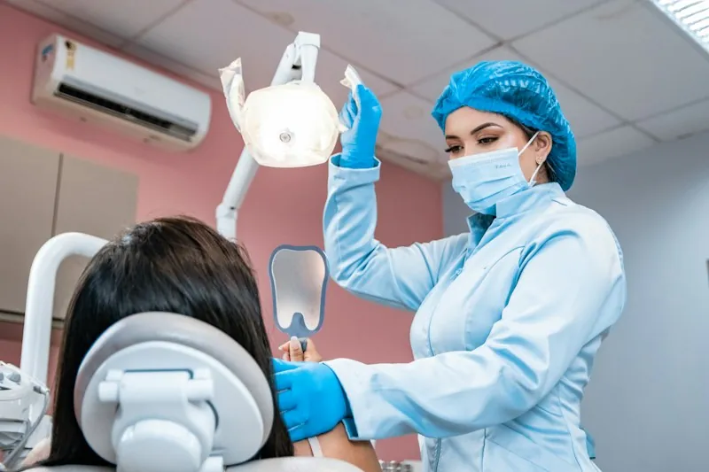
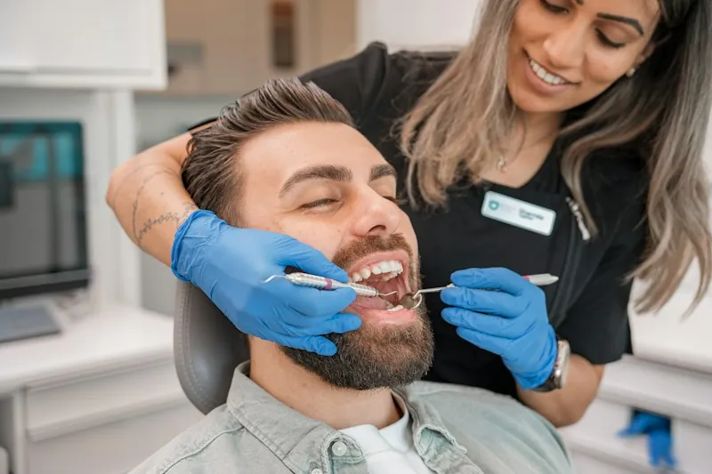

Odontologia completa no Cambuí
Seu dentista no Cambuí desde 2009
Implante, lentes, clareamento e aparelho com o preço combinado por escrito antes de começar.
Agendar avaliação · (19) 3254-0187Odontologia precisa, sem pressa e com o preço na mesa

A clínica
Cuidado de verdade, no coração do Cambuí
A Lumi atende na Av. Norte-Sul desde 2009. Quem dirige é a Dra. Beatriz Lemos, que acompanha cada plano de tratamento desde a primeira consulta.
Na avaliação, o raio-x panorâmico é feito na própria clínica, a gente explica o que viu e quais são as opções, e você leva o plano por escrito, com o preço fechado.
- 2009
- atendendo na Av. Norte-Sul
- 4,9
- de nota em 1.284 avaliações no Google
- 18x
- sem juros, ou 5% de desconto no Pix
Quem atende
Quem assina o plano é quem cuida de você
Cada tratamento tem um dentista responsável, com nome e registro no plano que você leva para casa. Nada de ser atendido cada vez por alguém diferente.


Como pensamos
Preservar o que é seu
Antes de pensar em trocar um dente, a gente tenta salvar. Nenhum material é melhor que o seu dente natural, então o tratamento começa pelo que dá para manter: odontologia minimamente invasiva.
Cada etapa é planejada com calma e explicada antes. Você recebe o orçamento escrito antes de começar e o valor não muda no meio do caminho. Sem pressa e sem surpresa, para decidir com toda a informação.
Tratamentos
Tudo o que o seu sorriso precisa
Valores de partida. Toque num tratamento para ver detalhes e simular as parcelas.
Atendemos pacientes de Cambuí · Taquaral · Guanabara · Nova Campinas · Castelo · Barão Geraldo · Centro · Sousas · Valinhos
Depoimentos
O que os pacientes contam
Avaliações do Google, nota 4,9 em 1.284 avaliações.
Onde estamos
Dentista no Cambuí
Av. Norte-Sul, 1.420, Cambuí, Campinas. Estacionamento no prédio.
Abrir no Google MapsO mapa abre no app do Google, com a rota até a clínica.Agendar
Agende a sua avaliação grátis
Exame clínico e raio-x panorâmico sem custo, sem obrigação de fechar. A recepção responde no WhatsApp em até 15 minutos.